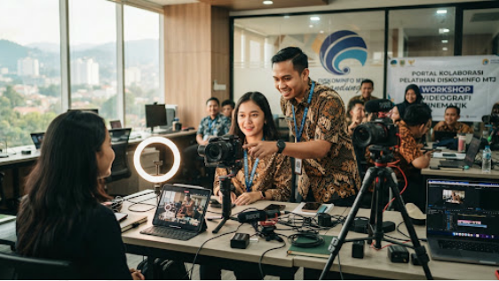

Program Kolaborasi
Akses berbagai program peningkatan kapasitas digital eksklusif dari DISKOMINFO Provinsi Jawa Barat.
MYTLN
Angkatan: 3
IKP Talks 3 Tahun 2026 "Digantikan atau Diperkuat?" Masa Depan Pranata Humas dan Pranata Komputer di Tengah Gelombang AI
Pendaftaran
17 Apr - 22 Apr 2026
Pelaksanaan
17 Apr - 22 Apr 2026

MYTLN
Angkatan: 4
IKP Talks #4 "Tips Membuat Video Sinematik untuk Organisasi - Budget Hemat, Branding Kuat"
Pendaftaran
22 Apr - 27 Apr 2026
Pelaksanaan
22 Apr - 27 Apr 2026